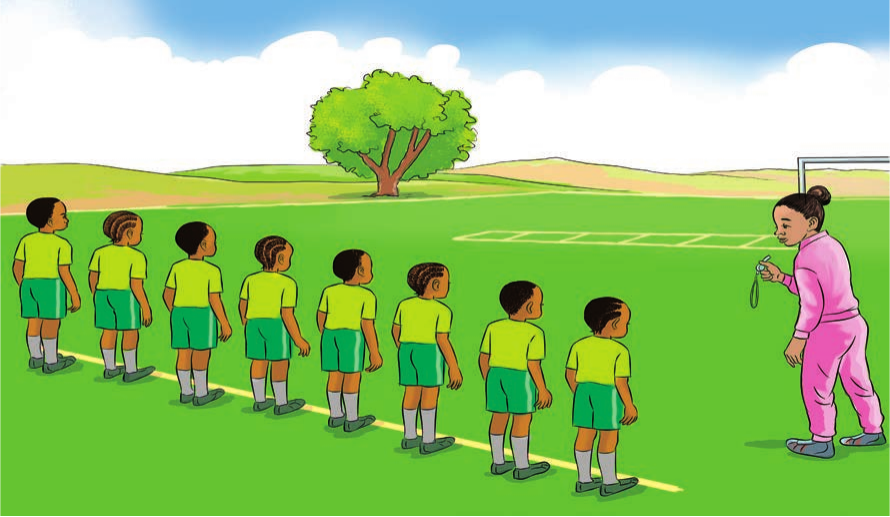
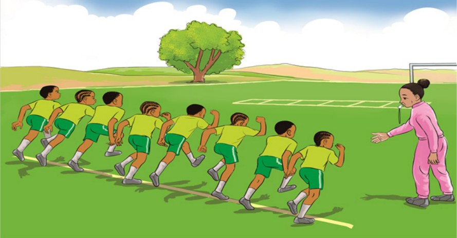

Tucheze mchezo
Visanduku
Mchezo huu huchezwa na wachezaji 8 au zaidi. Viduara viwe pungufu ya mbili ya idadi ya wachezaji.

Jinsi ya kucheza
- Simameni katika mstari wa kuanzia.
- Kaa tayari ukisikiliza filimbi ya mwamuzi.
- Kimbia kuwahi kisanduku baada ya filimbi kulia.
- Wakati unakimbia, filimbi ikisikika kaa chini.
- Inuka na kukimbia tena filimbi ikisikika.
- Endelea kutii filimbi huku ukikimbia kuwahi kisanduku.
- Atakayekosa kisanduku atatoka kwenye mchezo.
- Visanduku viwili vitapunguzwa kwa kila awamu.
- Fainali itakuwa na wachezaji wanne kuwania visanduku viwili.
- Washindi ni wawili watakaowahi visanduku.
